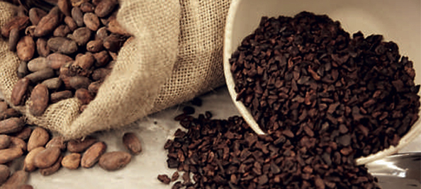
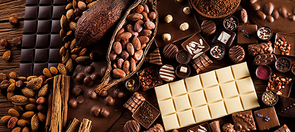

Cacao nib - the mystery solved
"You can't get up from the table until you finish your cacao nibs." Well, maybe not quite.
A cacao nib is the shelled and roasted cacao bean that has a crunchy texture and boasts that yummy chocolate flavor that is so universally loved. Think of it, perhaps, as premature chocolate, or as a veritable putty to be formed into anything from bland, cheap and watered-down, mass-produced candy to a dark, intense and ultra-rich confection. The difference? It's how far that little cacao nib is diluted with other ingredients, whatever they may be.
So percentage, friend, it's all about percentage. Check your chocolate for it's percentage of cacao and you will find out not only how rich and dark it's flavor will be, but also how beneficial it will be to your health, according to the current school of thought. And as with so many things in life: the more, the better.
Of course xocolatl.com is your Go-To-Place for everything chocolate, and high percentage cacao nib items are no different. Take a look at this high quality list, but let us warn you. Reading may cause you to run for your credit card.
xocolatl.com items with 75% Cacao Content or Higher:
- Vere Ultimo Organic Dark Chocolate Bar, 75% Cacao
- Vere Raspberry Lemon Organic Dark Chocolate Bar
- Dark Chocolate With Rosewater Chocopologie Bar 80% Cacao
- 88% Premier Cru Bar
- Vere Banana Macadamia Organic Dark Chocolate Bar 75% Cacao
- Vere Cayenne And Cacao Nibs Organic Dark Chocolate Bar 75% Cacao
- Vere Espresso Anise Organic Dark Chocolate Bar 75%
So take your pick, or why not choose several so you will have a nice supply on hand? Because you, your healthy heart, and the high percentage cacao nib; definitely a nice trio in tune.